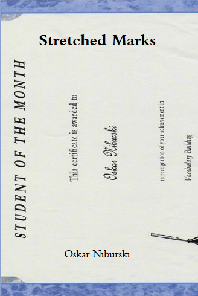

I speak
I write
I learn
HI! My name is Oskar Niburski. I have been trying my best for 21 years. I love chemistry and have taken a knack to computer science. My hobbies include pulling pranks on my brother, walking my dog, and not taking myself seriously. I have done somethhings, check them out on the side!
 http://jacobzrobin.wordpress.com/ http://www.thesil.ca/getting-past-universitys-disappointments http://themissingslate.com/2011/10/14/september-by-oskar-niburski/
https://github.com/raksonibs http://www.science.mcmaster.ca/wise/files/CREST_2012%20Proceedings%20FINAL.pdf coursera, udacity, edx, medical school, university youtube